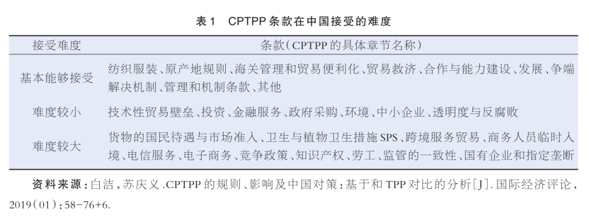
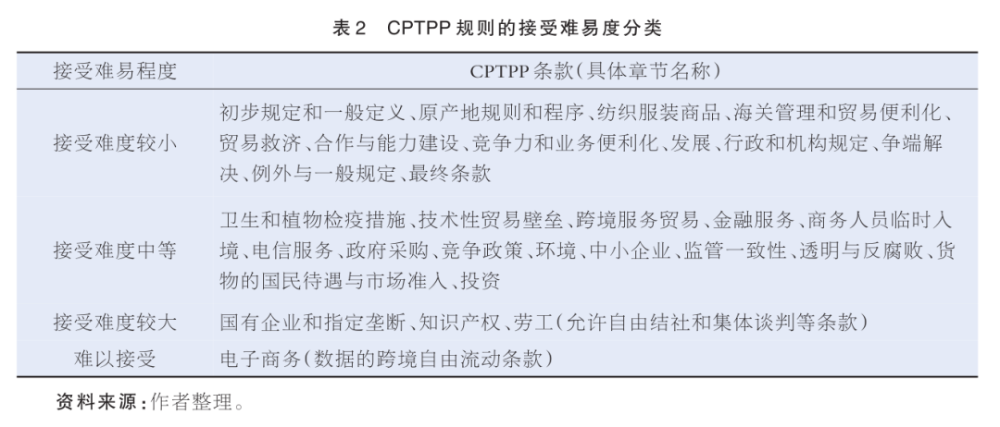

收录于合集
#《东北亚论坛》 4 个
#《东北亚论坛》2021年第3期 3 个

作品简介
作者： 张慧智，吉林大学东北亚研究中心教授；汪君瑶，吉林大学东北亚研究院世界经济专业博士研究生。
来源： 《东北亚论坛》2021年第3期
关键词： 新发展格局；地缘政治；国际规则；经济体制改革；制度型开放
摘要
受到新冠疫情与贸易保护主义的双重影响，国际市场需求低迷，世界经济发展出现停滞，以中美为代表的东西方国家的社会制度与意识形态差异也日益凸显。面对复杂多变的国际政治经济环境，中国提出构建“双循环”新发展格局，以期在畅通国内循环、提高自身抗风险能力与国际竞争力的同时，强化国内、国际市场的战略对接，深入维护和践行多边主义。在此背景下，为了深化国内经济体制改革、促进要素型开放向制度型开放转变，降低地缘政治经济风险、化解中美竞争压力，重塑经济全球化新格局，我国明确表示“积极考虑加入 CPTPP”并开始逐步推进。然而，中国在加入 CPTPP 前仍须解决包括国有企业改革、知识产权保护、劳工权益保障、跨境数据流通等在内的国内改革难题，还将面临以日本为首的 CPTPP 成员国的摇摆态度和美国霸权与同盟关系形成的外部阻力。针对中国加入 CPTPP 这一长期目标，我国应以构建“双循环”新发展格局为基础，通过深化国企改革、加大知识产权保护力度、强化劳工权益保障体系、提升数字治理能力等方式为加入 CPTPP 创造条件。
01
引言
当今世界正经历着百年不遇之大变局和百年一遇的新冠疫情大流行，贸易保护主义上升，全球产业链、供应链受到严重冲击，世界经济低迷，全球市场萎缩，疫情治理结果的巨大差异使中美竞争更加激烈，国际政治经济格局加速转变。在此形势下，2020 年 5 月 14 日召开的中共中央政治局常委会上，习近平首次提出要构建以国内大循环为主体、国内国际双循环相互促进的新发展格局，培育新形势下我国参与国际合作和竞争新优势。同年 10 月召开的十九届五中全会通过的《中共中央关于制定国民经济和社会发展第十四个五年规划和二○三五年远景目标的建议》则将“加快构建国内国际双循环新发展格局”纳入“十四五”时期经济社会发展的指导思想和基本原则，成为推动我国更深层次改革、实行更高水平开放的战略决策。
在我国推动实施“双循环”发展战略、构建新发展格局过程中，国家不仅致力于通过国内生产、分配、流通、消费的循环构建完善的内需体系，提升自主创新能力，形成国内供需的高水平动态平衡，也更加明确了“提高把握国际市场动向和需求特点的能力，提高把握国际规则能力，提高国际市场开拓能力，提高防范国际市场风险能力，带动企业在更高水平的对外开放中实现更好发展”的目标，强调“双循环”不是封闭的国内单循环，而是“使国内市场和国际市场更好联通，更好利用国际国内两个市场、两种资源”，“加快推进规则标准等制度型开放，率先建设更高水平开放型经济新体制”，“积极参与全球经济治理体系改革，推动完善更加公平合理的国际经济治理体系”。基于上述战略目标，我国一方面以国内循环为主体，集中力量做好自己的事；另一方面维护和践行多边主义，发挥超大市场优势和内需潜力，为各国合作提供更多机遇，为世界经济复苏和增长注入更多动力。
在此背景下，继 2020 年 11 月东亚 15 国共同签署区域全面经济伙伴关系协定（Regional Comprehensive Economic Partnership ，RCEP ）后，国家领导人习近平于同月召开的 APEC 领导人非正式会议上明确表达了“积极考虑加入全面与进步跨太平洋伙伴关系协定（Comprehensive and Progressive Agreement for Trans-Pacific Partnership，CPTPP）”的意愿，这是国家领导人首次明确表示将适时加入 CPTPP。此后，商务部也声明，“将按照加快构建新发展格局的要求，积极考虑加入 CPTPP，推动经济全球化和区域经济一体化。”中国的态度表明了我国从商品要素型开放，向包括规则、标准、管理体系在内的制度型开放转变的决心和意志。
同 RCEP相比，虽然 CPTPP 成员国人口数量与经济规模相对较小，但在国有企业、知识产权等方面有很高要求，其更深的自由贸易程度、更广阔的规则覆盖面使其成为高标准协定的最主要代表。鉴于 CPTPP 本身具有的国际政治经济含义，我国要加入 CPTPP 这一高标准贸易协定，是出于什么动因，将要迎接哪些挑战，需要进行哪些准备？本文将就这些问题进行深入思考与分析。
02
国际政治经济格局转变推动中国考虑加入CPTPP
首先，通过制度型开放全面深化国内改革，建设更高水平开放型经济新体制。2001 年，中国加入 WTO 时，无论是经济体制、法律制度还是产业竞争力，都面临着巨大挑战，但我国以开放的姿态接受了现行国际经贸规则，抓住了重要战略机遇期，构建了商品和要素流动型的开放发展模式，取得了高增长，实现了改革开放的历史性跨越。经过十年的发展，我国 GDP 由 2001 年的 11.09 万亿元增长至 2011 年的 48.79 万亿元，超额完成了十五大报告的十年目标。随着深化改革、扩大开放和相关制度的不断完善，我国社会主要矛盾发生了转化，经济也由高速增长阶段转向高质量发展阶段。2021 年是我国加入 WTO 二十年，是我国实现第一个百年目标、开启全面建设社会主义现代化国家新征程的关键时刻，也是“十四五”规划的开局之年。中国根据自身发展阶段和发展条件，适应国际政治经济环境的变化，提出构建“双循环”新发展格局的战略，就是既要挖掘内需潜力，有效提升国内资源配置效率，打通经济循环堵点，提升产业链、供应链的完整性，畅通国内经济大循环，更好地吸引全球资源要素；又要坚持实施更大范围、更宽领域、更深层次对外开放，依托我国大市场优势，促进国际合作，实现互利共赢。
在全球贸易规则竞争日益激烈、世贸组织改革势在必行的趋势下，形成各方能够基本达成普遍共识的新经贸规则体系是开放型世界经济发展的必然要求。中国积极加入 CPTPP 这一高标准自贸协定，表明了实行高水平对外开放的决心和意志，坚持以开放促改革，破除体制机制障碍，加快推动由商品和要素流动型开放向包括规则、规制、管理、标准等在内的制度型开放转变，建设高标准的市场体系，面向世界高端需求优化自身供给结构，推动实现更高层次的供需平衡，为国际循环畅通提供保障并赋予新能量。
其次，降低地缘政治经济风险，化解中美竞争压力，巩固中国市场经济地位。百年大变局和疫情大流行使国际上经济问题政治化、政治问题经济化现象更加突出。在中美战略竞争加剧的背景下，中国虽然取得了显著的抗疫成果并快速恢复了生产经营活动，但中国同美西方国家在社会制度、意识形态方面的差异也再次凸显，中国发展模式成为对美国意识形态和西方文明、对美国领导的西方世界的全面挑战，这使得我国改革开放面临的国际政治经济环境日趋复杂。拜登政府执政后，其贸易政策的核心转变为：回归多边主义，修复与盟国的关系；推动 WTO 改革，重塑包括环境保护、劳工权益、技术与透明度等在内的贸易规则。他还特别强调要用经济杠杆与中国展开竞争，将外交与经济政策相结合，通过国际规则制衡中国。此时中国宣布将积极加入 CPTPP，一方面说明中国正在积极考虑接受美国制定的国际规则，对美国表达和解善意，表达缓和中美矛盾的诚意；另一方面，当前美国尚不是 CPTPP 成员国，中国加入 CPTPP 不需要征得美国的同意，在谈判过程中减少了一个谈判能力最强的成员，中国加入的难度将大大降低。
尽管拜登政府试图打造“民主国家联盟”遏制中国，但亚洲和欧洲诸多国家不愿被卷入中美竞争之中，更不愿在美国打压下牺牲本国利益。为了规避贸易环境和地缘政治复杂化带来的负面影响，中国选择加入高标准的 CPTPP，这不仅有利于推动本国加快完善公平竞争制度，加强产权和知识产权保护，促进产业链供应链优化升级，创造更具吸引力的投资和营商环境，也是希望在通过多边合作保障自身经济利益的同时，化解美国对中国的围堵、排挤和遏制，应对美国“与中国长期战略竞争”带来的挑战，在遵循全球规范、推动制度型开放进程中，稳固中国的市场经济地位，并有效参与国际高标准贸易规则的构建。
最后，维护和践行多边主义，重塑经济全球化新格局。从产业间国际分工到产品内国际分工，经济全球化通过跨国合作使产品生产加工效率显著提升，也确实带来了贫富差距扩大、抵抗外来风险能力降低等问题。新冠疫情大流行则强化了国家主义、经济民族主义和贸易保护主义，推进了东道国生产活动本地化和发达国家再工业化，使全球产业价值链出现了本地化、区域化、分散化趋势，在此期间，特朗普政府推行“美国优先”的保护主义关税政策，不仅加剧了因巨大贫富差距形成的国内分裂，而且重创了全球自由贸易秩序。拜登上任后虽表示美国将在贸易领域回归多边主义，但他提出的“美国货美国造”“购买美国货”、构建以美国为中心的供应链、优先重视国内就业和产业等方针使其很难实施所承诺的自由贸易，迫于国内抵制全球化的巨大力量，拜登政府仍处于“以多边主义之名、行单边主义之实”阶段。
然而，各国抗击疫情取得的不同成果说明，不能有效控制疫情就难以复工复产，缺少国际经贸合作就难以克服经济衰退。中国的实际行动表明，要想战胜疫情，推动世界经济重返增长轨道，解决问题的出路是维护和践行多边主义。正因如此，中国才会在顺利签署 RCEP 和完成中欧投资协议（CAI）谈判后准备积极加入 CPTPP，而 CPTPP 在首次部长级会议上也明确了其“对抗贸易保护主义，大力推进自由贸易”的宗旨，指明了 CPTPP 深化多边合作的发展方向。此外，CPTPP 作为目前世界最高标准的区域贸易协定，其“全面性、进步性”对全球贸易新规则的制定具有积极影响，有可能成为未来亚太经济一体化合作协定的范本，将对经济全球化发挥积极的促进作用。中国加入 CPTPP 不仅可以积极参与全球价值链重构，巩固中国在全球价值链中的地缘政治经济优势，维护全球产业链稳定顺畅，还能够提高中国在全球经济治理中的影响力和规则制定权，进而使亚太国家利益的整体性和一致性得到强化。
03
中国加入CPTPP面临内外双重挑战
目前 CPTPP 正处于扩容阶段。自中国宣布积极加入 CPTPP 意愿后，国际社会对此表示高度关注。日本作为 2021 年 CPTPP 的轮值主席国，其首相菅义伟却表示“CPTPP 的高标准规则对中国而言，门槛相当高，以中国现行的政治经济体制很难参加”，以此“婉拒”中国。日本的审慎一方面出于其自身顾虑，另一方面也明确了 CPTPP 不会为了迎接中国而降低标准。可见，中国若想加入 CPTPP，不仅需要突破国内改革的各种难题，还需要克服与所有成员国谈判的各种阻力，因而面临着内外双重挑战。
对内，中国需要进行深入的经济体制改革，缩小与 CPTPP 规则的制度性差异。胡夫鲍尔等曾指出中国参与美国设计的 TPP 几乎是不可能的，因为 TPP 要求与中国现行做法相抵触，中国将不得不接受前所未有的国内改革，以符合有关国有企业、数据流和本地化限制、劳工义务和补贴的纪律。作为 TPP 的延续，CPTPP 总共包含 30 个章节，虽然在达成过程中冻结了美国主导的 22 条争议性条款，但仍有部分规则同中国现行政治经济体制存在较大差异，部分学者也对相关条款的可接受度进行了划分。以《〈跨太平洋伙伴关系协定〉文本解读》为依据，白洁和苏庆义将 CPTPP 条款划分为基本能够接受、难度较小和难度较大三部分（见表 1）。

佩特里和普卢默在分析中国加入 CPTPP 可能性时，将国有企业、知识产权、投资规则、电子商务、劳工权利以及市场准入判定为主要难点。综合已有观点，苏庆义再次对 CPTPP 规则的接受难度进行了更细致的分类，将以货物的国民待遇与市场准入为代表的四项条款归为接受难度较大系列，而电子商务（数据跨境自由流动）和劳工（自由结社和集体谈判）被划为不能接受系列。随着中美经贸协议、RCEP 以及中欧投资协定的签署，我国在知识产权保护、市场准入、投资等方面都取得了新的突破，CPTPP 相关条款的可接受度也发生了变化。蔡明阳在分析中国加入 CPTPP 可行性时指出，我国劳工权益保护与知识产权保护水平均不低于CPTPP 的水平，不会成为我国加入 CPTPP 的阻碍。本文以现实情况和学者观点为基础，将现阶段中国对 CPTPP 条款的接受难易度进行了划分（见表 2）。

通过对比表 1 与表 2 的划分可以发现，中国接受难度较大的条款数量有所减少，说明自中美贸易摩擦以来，我国的规则治理已经取得了一定成效，同国际规则的差距也在逐步缩小。从表 2 可以看出，我国对于 CPTPP 条款的接受难点主要集中在国有企业、知识产权、劳工（自由结社与集体谈判）以及电子商务（数据跨境自由流动）四个方面。这些条款不仅对保障国家和地区的经济发展具有重要意义，更从政治层面为不同体制国家的合作带来了挑战，成为了中国加入 CPTPP 过程中需要关注的重点问题。下面将围绕这四个条款对我国同 CPTPP 规则的差异进行具体分析。
1. 国有企业与指定垄断（第十七章）。CPTPP 对国有企业与垄断做了详细的定义，要求国有企业从商业角度考虑问题，限制对国有企业非商业性援助，禁止垄断与歧视性待遇，保证高透明度的信息交流。以上条款在一定程度上维护了市场的公平竞争，为发达国家发挥企业的竞争优势提供了空间，但同时也削弱了发展中国家的国有企业依靠政府支持提升竞争力实现快速发展的能力。在我国经济建设过程中，国有企业发挥了重要作用，虽然在基础设施建设、电信服务等方面形成了一定的垄断地位，但也通过提供公共性服务履行了其他类型企业难以完成的社会责任，为国计民生做出了突出贡献。目前，国际社会普遍认为，我国通过政府补贴的形式向国有企业提供了过度的非商业性援助，这使得发达国家所推崇的公平竞争的市场秩序遭到破坏。为了同国际规则接轨、提高国有企业竞争力，我国开始推行并不断深化国有企业改革。2015 年 12 月国资委联合财政部与发展改革委印发了《关于国有企业功能界定与分类的指导意见》，将国有企业根据不同的发展目标划分为商业类与公益类，其中公益类企业涉及的必要产品或服务价格可以由政府调控。2018 年中央企业前三季度经济运行情况发布会上，国务院国有资产监督管理委员会副秘书长彭华岗表示，中国的国有企业正通过改革逐步向“依法平等使用生产要素、公平参与市场竞争”的目标迈进，这同“竞争中性”原则相一致。然而，受各类现实因素制约，我国对国有企业进行的商业类与公益类划分仍未得到充分实践，国有企业改革也步入了关键时期，但监管体系、创新体系不完善等问题依然突出。因此，如何在发挥国有企业公益性作用的基础上保障“竞争中性”、在削减特殊补贴的同时提升国有企业竞争力将成为中国在国企改革方面面临的巨大挑战，这也是中国致力于加入 CPTPP 所需解决的重要问题。
2. 知识产权（第十八章）。随着科技创新对国家发展影响力的不断提升，知识产权保护成为各国关注的重点议题。为了更好地保障各成员国利益，CPTPP 冻结了原 TPP 中关于知识产权的多项条款，并对保留内容进行了详细的划分，主要包含合作、商标、国名、地理标志、专利和未公开测试或其他数据、工业设计、版权和相关权益、网络服务提供商以及对执法程序的严格规定，但其中不乏 TRIPS-plus 条款和高于我国法律标准的条款，对其进行借鉴吸收并非易事。近年来，我国一直致力于提升本国创新能力，完善知识产权保护体系，促进本国知识产权保护水平同国际接轨。根据世界知识产权组织（WIPO）发布的《2020 年全球创新指数报告（GII 2020）》中的相关数据，我国全球创新指数排名稳定在第 14 位，是前 30 位中唯一的中等收入经济体，在专利、实用新型、商标、工业品外观设计申请量和创意产品出口等方面达到世界领先水平，但同美国（第 3 位）和新加坡（第 8 位）的创新能力相比仍有一定差距。在 2020 年 1 月签署的《中美第一阶段经贸协议》中，知识产权被作为首章进行了详细表述，并通过 “举证责任转移”“打击假冒与侵权”“规定严厉的执法思路与条款”等内容为中国知识产权保护的前进道路指明了改革方向。由于美国主导了作为 CPTPP 前身的 TPP，中美经贸协议的签署在一定程度上推动了我国逐步向国际知识产权保护标准靠近，但同时也说明我国在这些方面存在法律法规的缺失，这与 CCG 全球化智库在解析 CPTPP 知识产权条例后所得的结论相一致。面对现存的知识产权保护体系不完善、立法缺乏系统性和逻辑性、行政司法部门脱节、对侵犯知识产权行为威慑力不足等问题，我国在加入 CPTPP 过程中必须做好迎接挑战的准备。
3. 劳工（第十九章）。随着经济全球化的发展，劳工条款越来越成为国际贸易协定的重要组成部分。CPTPP 关于劳工的条款消除了一切形式的强迫或强制劳动，不允许削弱或减少劳动法的保护来鼓励贸易或投资，要求企业履行社会责任，保障劳工权益，完善争端解决机制，通过设定联络点、组建理事会加强各成员之间的沟通协作。此外，该章内容中明确要求缔约方确认相关义务与劳工权利，其中包括结社自由和有效承认集体谈判权。目前，在我国现行的劳工管理保障体系下，劳工环境得到了显著改善，劳工的意见与反馈主要通过产业工会、地方总工会以及中华全国总工会得以实现，《劳动争议调节仲裁法》《劳动合同法》等法律法规的出台为解决劳务纠纷、保障劳工权益提供了有力支持，文化培训、技能竞赛、模范表彰等活动安排更在提升劳动者素质的同时激发了劳动积极性。
针对结社自由和集体谈判权的问题，我国尚未通过国际劳工组织《结社自由和保护组织权公约》《组织权和集体谈判权公约》的相关条款，但《中华人民共和国宪法》明确规定，中华人民共和国公民有言论、出版、集会、结社、游行、示威的自由，《劳动合同法》也清晰指出，集体合同草案应当提交职工代表大会或者全体职工讨论通过，这从本质上同国际劳工公约的要求相一致，也说明我国与 CPTPP 规则间不存在根本性的对立。然而，从规定劳工权益的具体法律来看，我国的法律标准同国际规则和 CPTPP 内容间仍存在一定差异，例如《中华人民共和国工会法》中将维护全国人民总体利益作为维护职工合法权益的基础，这在一定程度上对劳工结社自由和集体谈判活动进行了约束。此外，受到国家体制差异的影响，劳工维护权益的表现方式也有所不同。在欧美等多党派执政的国家中，劳工们通过游行示威可以获得非执政党的关注，形成非解决问题即更换执政党的二选一模式，这使得以游行为代表的结社自由与集体谈判行为成为劳工维护自身权益的重要方式。然而，结社与谈判的过度自由也会在降低社会生产效率的同时扰乱社会秩序，不一定有利于解决问题，更对国家的稳定发展造成了不良影响。劳工条款的最终目的是保障劳工权益，但维护社会安定是基本要求。因此，在逐步向被广泛接受的国际标准对接的过程中，如何形成和完善符合国家利益、保障劳工权益的法律法规，构建完备的执法和监管体系将成为中国加入 CPTPP 过程中需要解决的大难题。
4. 电子商务（第十四章）。CPTPP 从关税、数字产品的非歧视性待遇、国内电子交易框架、电子认证与签名、在线消费者保护、个人信息保护等角度对电子商务的发展与合作提出了细致要求，在分担互联网费用的同时强化电子商务合作，明确计算设施位置分布，强调无纸贸易、电子手段的信息跨境转移以及商业信息跨境自由传输等条款，而这些条款在一定程度上是美国根据本国互联网科技优势和数据霸权需求制定的。中国作为电子商务大国，出于国家安全和国内电子商务发展需求，制定了《网络安全法》《电子商务法》等法律法规，但现存法规仅明确表示数据应在境内存储，并未对数据跨境流动进行合理规范，同国际做法相比仍存在较大差距。随着 2020 年《全球数据安全倡议》的提出，中国开始在数据流通方面进行探索与突破，然而相配套的法律法规、监管体系尚未得到进一步的构建与完善，保障数据安全的根本要求也将使我国在短期内难以接受 CPTPP 的相关标准。
以上四项改革重点条款中，国有企业与知识产权的要求同我国发展方向一致，相对容易接受，劳工规则不存在实质性差异，调整起来有难度但不会形成较大阻碍，而电子商务中的特定内容（数据跨境自由流通）同我国社会制度与发展要求间存在根本性分歧，接受难度较大。
除以上条款外，CPTPP 在削减成员国 98%出口产品关税壁垒、卫生与植物卫生措施（SPS）升级、加强《反垄断法》、扩大竞争政策范围等方面也都具有较高标准，要求我国继续通过努力缩小差距。随着深化改革的持续推进，我国在市场准入、政府采购、环境保护等方面已经取得一定进展，但要对标 CPTPP 各项规则仍需较长时间进行准备。
对外，中国需要获得 CPTPP 原始成员国的支持，并化解美国为遏制中国而可能实施的阻挠。根据 CPTPP 的规定，新成员加入需经所有原始成员协调同意。中国积极加入的意向首先遭到日本“婉拒”，主要是出于政治考量。CPTPP 是由日本主导的、为数不多的多边国际组织，日本也是现有成员国中经济规模最大的国家。而目前，中国的 GDP 总量已达日本的 3 倍。在美国尚未决定是否重回协议的情况下，若中国加入 CPTPP，日本的主导权和控制权将被稀释，其在 CPTPP 的主导地位可能会被动摇。另一方面，中国与加拿大、墨西哥的协商将会受到《美墨加协定》（USMCA）中“毒丸条款”［的制约，即三方中若有一方与“非市场经济国家”签署贸易协定，那么这个国家就会被踢出“群”。由于欧美尚未承认中国为“市场经济国家”，中国仍将被认为是“毒丸条款”针对的主要对象，如何使加、墨两国摆脱“毒丸条款”的制约将是解决问题的关键。
此外，美国无论是否重回该协议，都可能阻挠中国的加入。当初美国打造 TPP 的目标就是要借助高水平自贸协定，开拓潜力巨大的东亚市场，推广美国标准，构建贸易合作新模式，维护其在亚太地区的领导地位；不包括中国的 TPP 所形成的贸易和投资转移效应将对中国经济造成负面影响，削弱中国在东亚地区影响力，再迫使中国依据美国的规则加入协议。虽然特朗普上任第一天就签署行政令宣布美国退出了 TPP，但美国视中国为挑战其地位、威胁其繁荣与安全的竞争对手的态度没有改变，其为遏制中国发展而采取的限制措施与舆论攻击也不会停止。拜登上任后，美国政府优先解决国内问题，暂缓任何贸易协定谈判，虽为中国提供了谈判加入的时间和空间，但美国不会愿意中国早于其加入 CPTPP。若美国施压，其盟国可能会试图拖延甚至停止与中国谈判，并要求美国尽快重返 CPTPP。如果美国在拜登任内重新加入 CPTPP，则可能选择恢复 TPP 冻结条款甚至提高相关标准，这必将为中国加入 CPTPP 增添更多不确定性。
04
推动中国加入CPTPP的建议
面对错综复杂的国际环境以及深化国内改革需要迎接的各种挑战，中国要加入 CPTPP 必然需要较长时间。为了获取 CPTPP 成员国的支持、降低美国阻挠的可能性，中国需要表现出足够的诚意，向相关国家证明中国加入 CPTPP 后各国将实现“正和博弈”，增信释疑的关键在于如何有效解决中国发展现状同 CPTPP 规则乃至国际规则间的差异问题，而持续深化改革将成为中国探索加入 CPTPP 的必经之路。因此，当前工作的重点仍是集中精力办好自己的事，加快构建以国内大循环为主体、国内国际双循环相互促进的新发展格局，在“十四五”时期内实现“社会主义市场经济体制更加完善，高标准市场体系基本建成，更高水平开放型经济新体制基本形成”等目标。在此过程中，中国不仅要对标国际规则，而且要积极参与国际规则制定，推动形成公正合理的国际规则体系，为加入 CPTPP 创造条件，为全面建设社会主义现代化国家夯实基础。
首先，继续深化国企改革。国有企业是中国特色社会主义的重要物质基础和政治基础，是国民经济的重要支柱和依靠力量，为推动经济社会发展、保障改善民生、提升综合国力做出了重大贡献。中国持续做强做优做大国有企业的做法遭到许多国家的质疑，主要是认为其破坏了市场公平竞争秩序。为缓解民营企业和外资企业的焦虑和关切，2019 年政府工作报告第一次提出“按照竞争中性原则，在要素获取、准入许可、经营运行、政府采购和招投标等方面，对各类所有制企业平等对待”。这是我国在保持经济平稳增长的基础上做出的自我调整，使国有企业的内部管理、外部环境、运营机制更加符合市场经济的特点，符合 CPTPP 对于公平竞争的要求，虽可能经历改革的“阵痛”，但有利于塑造更加公平公正的市场竞争格局，促进各类所有制企业在竞争中相互借鉴、共同进步，还可在一定程度上削减 CPTPP 成员国因中国政府过度支持国有企业形成的不满情绪。此外，在社会主义市场经济体制下，要继续完善对国有企业商业类与公益类行为的分类标准，以“竞争中性”原则为基础，利用政府采购等方式逐步削减乃至消除对商业性国有企业的直接补贴；根据企业提供产品的差异、企业所处产业链位置的差异针对性把握制度改革方向，设定分阶段改革目标，保证改革可行性与实效性；完善混合制企业的运营管理模式，引入多类型投资者实现股权多元化，利用员工持股计划从基层激发企业创新发展动力；提升企业信息透明度，完善并严格落实同企业管理相关的规章制度，在保障国有企业特性①的基础上逐步为加入 CPTPP 消除障碍。
其次，持续加大对知识产权的保护力度。以中美经贸协定和 CPTPP 的相关条款为参考，完备包括专利法、商标法等在内的知识产权保护法律法规；强化机构、企业以及个人的知识产权保护意识，加大对盗版等侵犯知识产权行为的惩治力度；完善知识产权保护服务体系，做到审查、执行、协调等多方面全覆盖；形成高水平的国际知识产权风险预警与应急机制，帮助企业、公民在国际交流合作过程中实现跨境维权，不仅从根本上为科技创新人才与成果提供保障，更通过同国际规则的对接使我国对 CPTPP 条款的接受能力得到提升。
第三，进一步完善工会职能，全方位保障劳工权益。在改革开放进程中，我国不仅接受了员工合法权益国际性保护的理念，还采用涉及劳工条款内容、与企业社会责任相关的 ISO26000、SA8000、G4 等国际标准体系，从政府、企业角度积极对员工责任实施保护，更加全面地落实对劳动者合法权益进行保障的国际原则。为顺应高标准国际贸易协定对劳工标准要求日益严格的趋势，我国做出了积极努力，在中欧投资协定中对保护劳工权益进行了明确规定，并对尚未批准的两项国际劳工组织关于强迫劳动的基本公约做出具体承诺。此举无疑表达了中国政府向国际劳工组织基本公约的标准看齐、进一步完善国内劳工制度和法律体系的决心。在此基础上，我国一方面应致力于尽快批准国际劳工组织基本公约中的四个未批准项，同时以国际劳工组织公约和 CPTPP 的基本要求为标准，完善《工会法》《劳动合同法》等同维护劳工权益紧密相关的法律法规，做到有法可依；另一方面，结合本国实际情况，形成具有中国特色的劳工权益保障体系：发挥地方与企业工会的作用，加大政策执行力度与基层探查力度，保证将涉及劳工工作权益、生活保障的政策措施落到实处；建立维权服务部门、热线或网站，使劳工的需求与问题有途径反馈；向职工系统性普及维权知识，鼓励职工通过正规途径对企业不合理行为进行维权，并对困难职工等特殊人群提供维权帮扶服务；督促企业落实《劳动法》等法律规定的具体要求，加强对企业的监督检查力度，健全劳动关系协调机制，严厉惩处损害劳工合法权益的经营行为。此外，工会还应积极拓展职工文化技术培训、竞赛活动，优化模范评选标准，加大模范奖励力度，提升劳工个人技术水平与工作积极性；组织职工参与国家与社会事务管理，通过参与法律法规制定为职工争取更多合法权益。在未来 CPTPP 的谈判过程中，我国可以根据改革后的实际情况进行合理的争取，如仍存在较大差异，也可考虑借鉴 TPP 谈判过程中美国对越南、马来西亚等发展中经济体提供的过渡做法，通过签署《兼容计划》等为我国加入 CPTPP 争取先机，也为国内的改革和调整争取时间。
第四，以维护数据主权和数据安全为前提，提升数字治理能力。在数字经济时代，数据流动对全球经济增长贡献早已超越以商品、服务、资本、贸易等为代表的传统要素，抢占数字经济发展新高地已成为我国构建“双循环”格局的重要一环。由于数字贸易的基础是跨境数据流动及相关服务，各国政府大都倾向于通过宏观经济政策促进本国数字经济与数字贸易的发展，跨境数据流动政策也因此成为新一轮国际经贸规则中的前沿议题和国家战略博弈的焦点。在数据安全风险突出、全球数字治理面临新挑战的背景下，中国提出了《全球数据安全倡议》，不仅向世界表达了中国拥抱多边合作、倡导“安全共享”的美好意愿，也获得了国际社会的广泛认同。目前，全球范围公认的数字经济发展规则与数据流通规则尚未形成，这不仅是中国数字产业的发展契机，更为中国参与国际规则的制定提供了可能。因此，我国应一方面加快本国数字化发展进程，推进服务数字化建设，提高社会治理智能化水平；搭建数据交流平台，促进数据信息的有序开放；推进数字产业化，完善同数字化转型相匹配的基础设施建设；推进产业数字化，促进一、二、三产业同互联网、人工智能等数字化技术的深度融合，形成智慧农业、互联网工业、数字服务业，提升数字金融、电子商务等新业态新模式的国际竞争力；另一方面，要以保障数据安全为基础，制定同数据储存、跨境流通等紧密相关的法律法规，完善监督管理体系，做到有法可依、有法必依，并将《全球数据安全倡议》作为制定数字安全国际标准的重要蓝本，在未来的 CPTPP 谈判中维护和拓展我国的发展利益，也为世界各国的数字安全规则提出中国建议。
此外，我国还要继续加快转变和完善政府职能，加大“放管服”的改革力度，统一政务标准，提高政务处理效率，为法律法规的制定和执行提供良好保障；免除对中小微企业与创新企业的不合理费用与规定，加大对垄断与不正当竞争行为的惩治力度，推进构建公平公正的营商环境。要提升自主创新能力，增强科技创新人才培养力度，大力发展高科技产业；搭建科研成果与信息的交流平台，加强科研机构、高等院校、企业科研部门间的沟通协作和资源共享；鼓励企业掌握和引领国际标准，引导国际高端创新要素集聚到我国，掌握国际分工的主动权，从根本上破除制约“双循环”要素流通的障碍。要继续优化《市场准入负面清单内容》，提高海关服务质量与效率;加快推进已达成自贸协定国家的关税减免进程，将中国同 CPTPP 成员国的贸易或投资协定进行合理升级；寻求同更多国家和地区开展自由贸易合作、参与国际组织协定的机会，在学习借鉴国际规则、积累谈判经验的同时推广富有中国特色的发展理念，为加入 CPTPP 奠定更坚实基础。
综上，在双循环新发展格局下中国积极考虑加入 CPTPP，主要目标就是以开放促改革，通过深化经济体制改革促进制度型开放，开辟多边合作新局面。尽管我国同加入 CPTPP 的标准和规则尚有较大差距，达成这一目标仍需要较长的实践过程，但通过签署 RCEP、中欧全面投资协定以及其他双边贸易协定，我国已经在电子商务、知识产权、政府采购、国有企业等规则方面取得了较大进步，营商环境的公平透明程度得到大幅改善，国际贸易协定的协商能力得到大幅提升。虽然现有国际规则本质上由美欧等发达国家主导，我国仍凭借“互利共赢”的合作理念吸引了越来越多的地区国家，在与国际标准对接的同时，逐步提出并推广中国标准，探索参与全球贸易规则制定的新路径。中国希望能通过早日成为高标准协定中的一员，维护和践行多边主义。
排版 | 王慧瑜
文章观点不代表本平台观点，本平台评译分享的文章均出于专业学习之用, 不以任何盈利为目的，内容主要呈现对原文的介绍，原文内容请通过各高校购买的数据库自行下载。